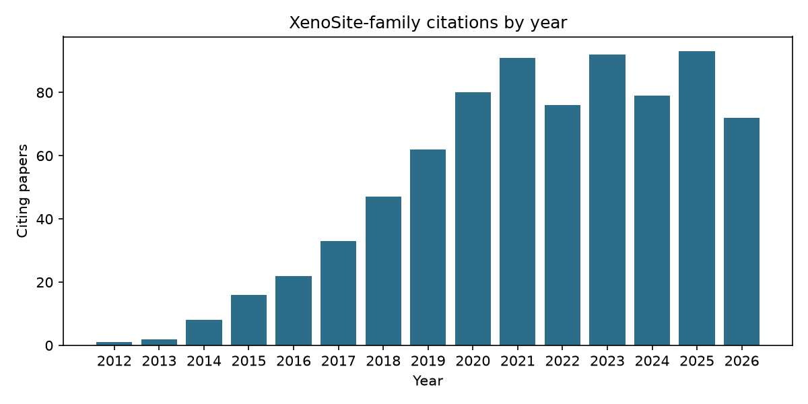
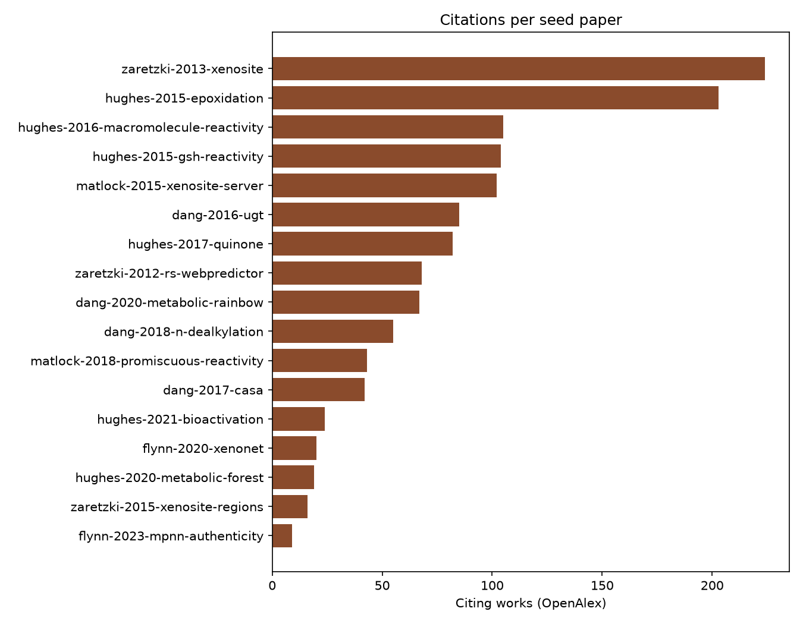
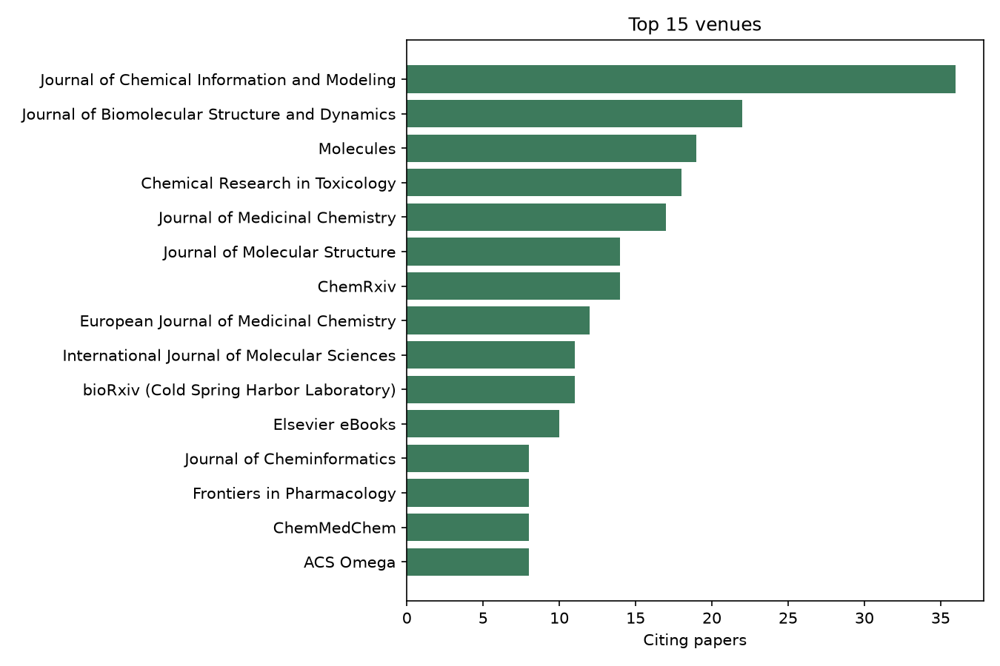
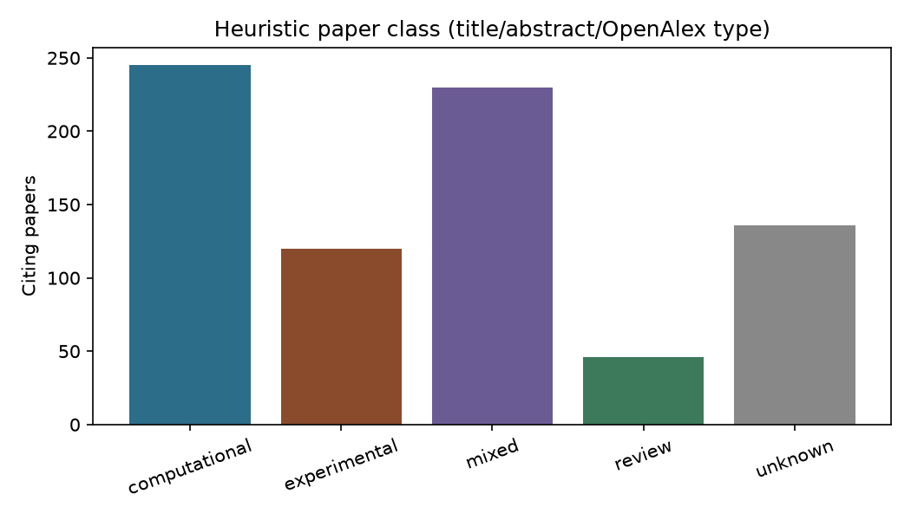
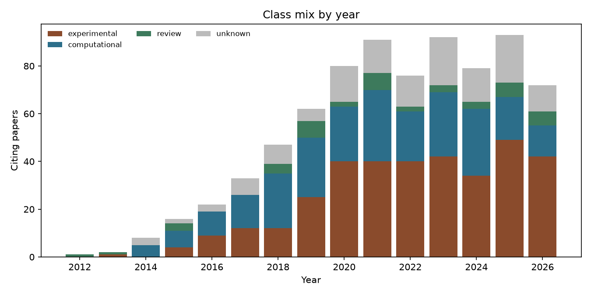
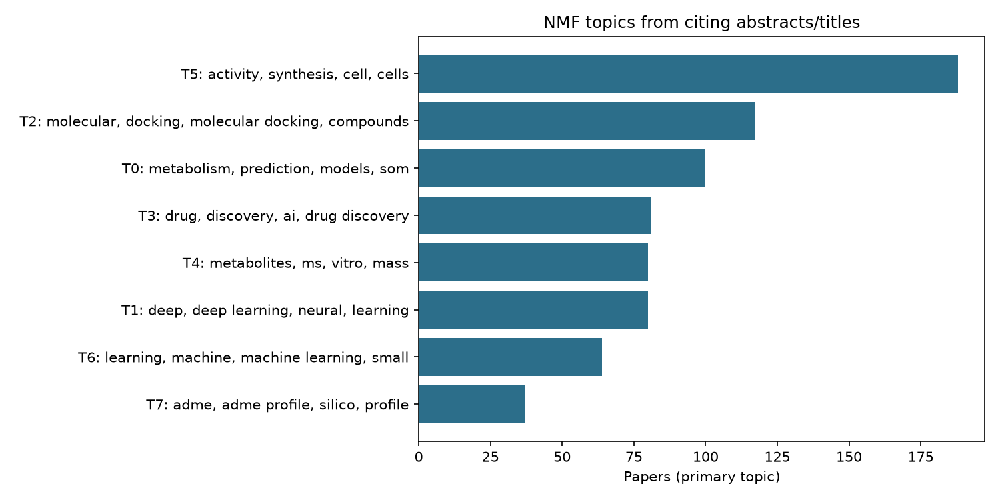
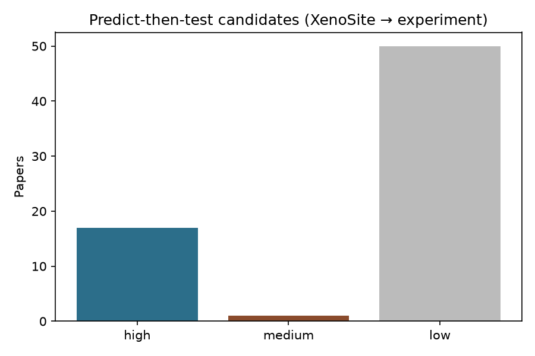

XenoSite citation study
Bibliometrics and labels for papers that cite the XenoSite-family method seeds. Figures are regenerated on each site deploy from the committed OpenAlex graph.
Interactive explorer
Filter citing papers by year, class, topic, seed, and predict-then-test confidence. Includes an interactive SOM software comparison. Runs in the browser (static marimo / WebAssembly).
SOM software comparison
Unique citing papers across each approach’s combined method-paper seed set (not flagship-only). XenoSite is shown as the full suite and as SOM-tagged seeds only.

Citations by year
OpenAlex citing works across all seeds.

Citations per seed
How often each seed paper is cited in the retrieved set.

Top venues
Journals and venues that appear most often among citing papers.

Paper class
Heuristic labels: experimental if any wet-lab cue; otherwise computation-only, review, or unknown.

Class mix by year
Stacked class composition over time.

Topics
NMF topics from citing titles and abstracts.

Predict-then-test candidates
Papers that appear to use a XenoSite-family tool and then test experimentally.
